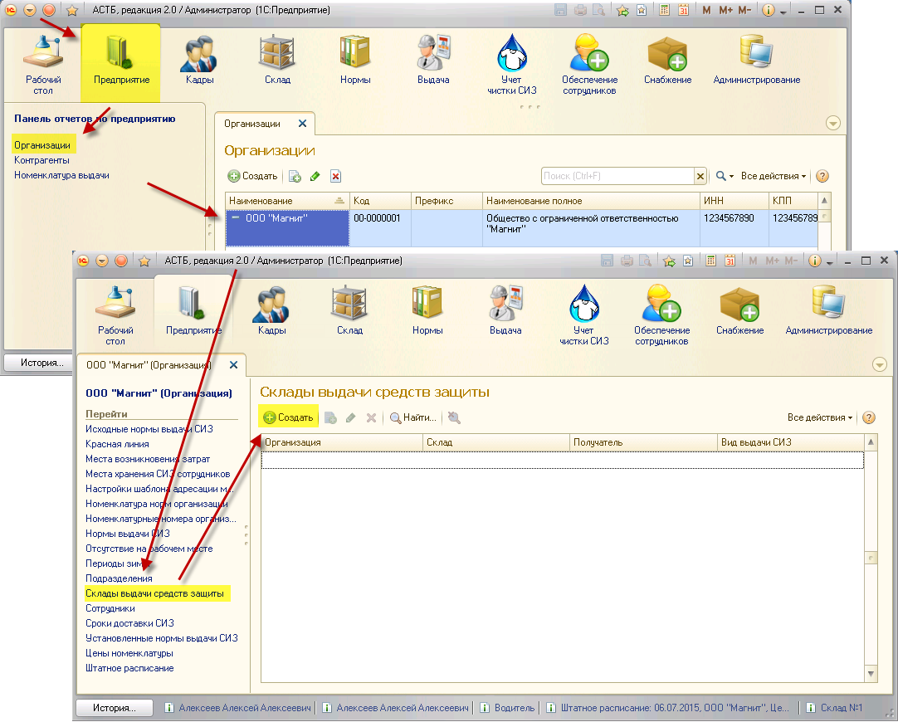
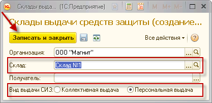

После заполнения справочника «Склады», следует привязать созданные склады к организации. Для этого нужно перейти на страницу организации из раздела «Предприятия», выбрать пункт «Склады выдачи средств защиты». После этого нажмите на кнопку «Создать».

В открывшемся окне нужно выбрать:
1. Склад – выбрать из созданных ранее складов;
2. Вид выдачи СИЗ (для конкретного склада) – склад коллективной или персональной выдачи.

После введения всех данных нажмите на кнопку «Записать и закрыть».